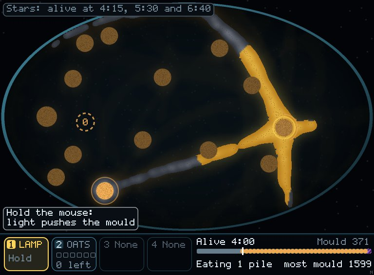
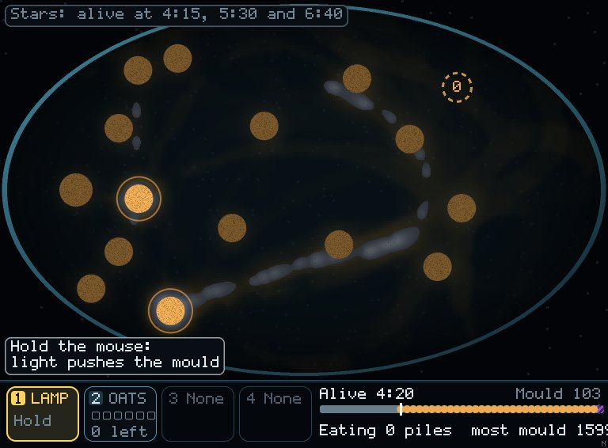
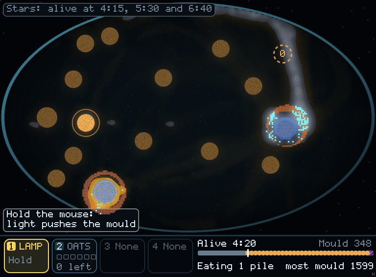
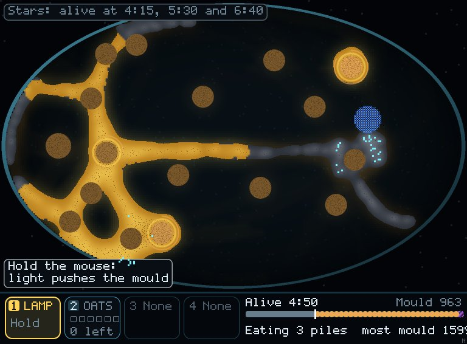
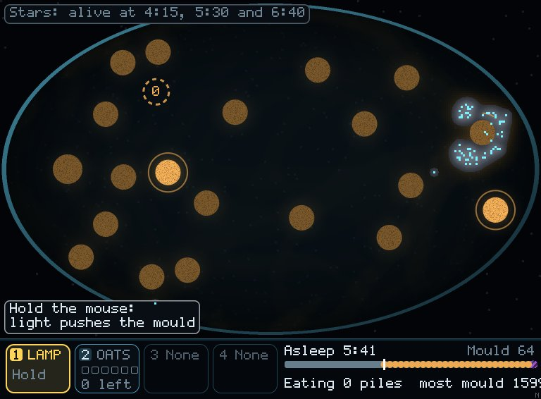
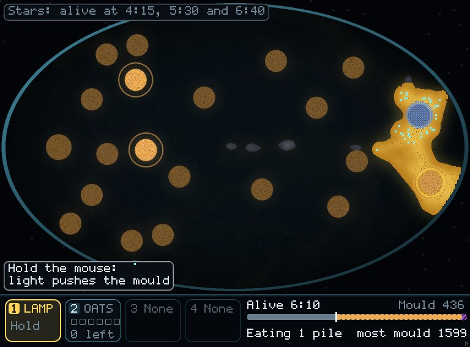
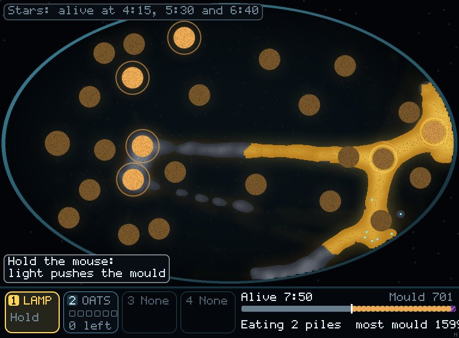

Mould · Keep It Alive · water and sleep · 10 Nov 2026
The lamp puts the mould to sleep, and water wakes it at the next pile
This is step 2 of the order you agreed: tools that work on each other. The lamp dries the ground under it. Mould on dry ground goes to sleep: it stops moving and eating and costs nothing, but it slowly dies. A drop of water wakes it. Water is a new tool. You hold 2 drops, and one comes back every 40 s. So when the food runs out, you can put the mould to sleep and wake it later by the next pile. It's on in Keep It Alive. The three puzzle dishes are unchanged.
Using all three tools beats oats alone
- Over 16 seeds, a scripted hand using lamp, oats and water lives 2:51–10:42 (median 4:41). That's longer than the oat-only hand on 15 of 16 seeds, and longer than random on 15 of 16 (p 0.0005 each).
- Random play doesn't gain from water: it lives 1:04–3:29, and wet against dry it was longer on only 7 of 16 seeds. Its lamp puts mould to sleep, and nothing comes to wake it. Doing nothing and random get 0 stars on all 16 seeds.
- The time counts only while the mould is awake. If it falls asleep and never wakes, the clock stops at the moment it fell asleep, so baking everything at the end doesn't buy time.
Seed 2: the same dish, oats only (left) and with water (right)
These three colours are a probe overlay, painted on top of the real frame. The game doesn't draw water or sleep yet; the looks thread is doing that next.




Seed 2 with water, after that




Seed 2: oats only lived 4:26; with water it lived 9:21 (3 stars), using the lamp 15 s and 10 drops of water. From 9:00 it was a crust of under 60 sleepers on an eaten pile. A last drop woke enough of it at 9:21, and the clock stops there, though the last sleepers lasted to 9:40.
Every seed, how long it lived
| Seed | 1 | 2 | 3 | 4 | 5 | 6 | 7 | 8 | 9 | 10 | 11 | 12 | 13 | 14 | 15 | 16 |
|---|---|---|---|---|---|---|---|---|---|---|---|---|---|---|---|---|
| Do nothing | 2:13 | 2:27 | 2:53 | 3:48 | 2:06 | 1:08 | 1:47 | 1:47 | 1:46 | 2:10 | 2:08 | 2:29 | 2:09 | 3:06 | 2:33 | 1:27 |
| Random | 2:49 | 2:03 | 1:41 | 1:07 | 2:04 | 2:07 | 1:42 | 1:06 | 1:46 | 3:29 | 1:54 | 2:27 | 1:04 | 3:29 | 1:05 | 2:45 |
| Oats only | 3:09 | 4:26 | 4:09 | 3:28 | 3:48 | 4:08 | 5:26 | 3:29 | 3:31 | 3:34 | 2:57 | 3:26 | 3:53 | 3:06 | 4:39 | 2:47 |
| With water | 8:01 | 9:21 | 4:11 | 8:03 | 4:28 | 4:41 | 10:42 | 4:41 | 10:41 | 5:04 | 3:22 | 3:28 | 4:41 | 3:03 | 7:21 | 2:51 |
- The stars are still alive at 4:15, 5:30 and 6:40. With water the scripted hand gets 0 stars on 5 seeds, 1 on 5 and 3 on 6. Oats only gets 1 star on 3 seeds.
- It loses where the next pile lands too far from any sleeper to wake it. A person choosing where to sleep it should do better.
- Tuning: at first (3 drops, one back every 20 s, sleepers living 40 s) random play woke enough sleepers by chance to reach the 10-minute cap on 4 of 16 seeds. Scarcer water and shorter-lived sleepers were both needed.
Not yet
- In the window, water is key 3, but the bottom bar doesn't show it yet (it still reads "3 None"). The looks thread is adding the tile, the wet ground, sleeping mould and the drop preview.
- Next is the wild second mould. After that, finer tubes, which will need these numbers measured again.
Try it: cargo run --release --bin mould, open the dishes, then Keep It Alive. Hold the lamp on mould to dry it; press 3, then click to water.